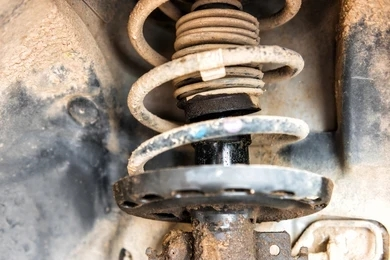

Car Suspension System
What's a car suspension?
This is a crucial vehicle component that helps provide a smooth and comfortable ride for the driver and passengers by absorbing shocks and vibrations produced by tyres and uneven road surfaces. The suspension system mechanically links the body of the car to the wheels and tyres, controls the movement of the car, and ensures that the tyres remain in constant contact with the road. A car's suspension system is made up of various parts, such as springs, dampers(shock absorbers), struts, control arms, and sway bars. These components collaborate to improve the vehicle's maneuverability, steadiness, and overall driving comfort.
Components of the suspension system
- Springs
- Shock absorbers
- Control arms
- Rubber bushes
- Ball joints
- Sway bar (also known as Roll/Anti-roll/Anti-sway bar.)
- Strut
Functions of each component of the suspension system.
The suspension system consists of various elements, including springs, dampers, struts, control arms, and
stabilizer bars. Each of these components performs a specific role to ensure that the driver and passengers have a smooth and
comfortable ride.
The function of each component is as discussed below:
- )
Springs.
Suspension springs act as a link between the car's body and its wheels. Their primary function is to compensate for uneven road surfaces, thereby providing a comfortable ride. Additionally, they ensure that all wheels maintain a good grip on the road, regardless of their condition.


- )
Shock absorber.
The shock absorber is an important component of the suspension system. Just as the name suggests, it helps absorb the compression force from the springs and prevents the car from bouncing on the road. Shock absorbers control unnecessary excess spring motion and ensure that your tyres are in contact with the road surface at all times.

- )
Control arm.
This is a crucial component in a vehicle's suspension system. It links the steering knuckle and wheel hub to the frame of the vehicle. The main function of the control arm is to ensure that the wheels are properly aligned and maintain stability during driving.

- )
Bushes.
A car bush is a cushion made of rubber, polyurethane, or other materials. Bushes are fitted onto the suspension system of a vehicle to absorb shock, control movement within the joints, reduce vibrations and noise, thus enhancing comfort.

- )
Ball joint.
Ball joints act as pivots between the control arms and the steering knuckles, allowing for the up and down movement of the suspension while still maintaining a connection between the wheels and the steering system. This ensures a safe, smooth ride and also allows the driver to have full control of the vehicle.

- )
Sway bar.
A sway bar, also known as an anti-sway bar, roll bar or anti-roll bar, is a component of the vehicle's suspension system that prevents the car from rolling when maneuvering through corners or traversing uneven road surfaces. It connects the right and left control arms and evenly distributes the weight of the vehicle between the wheels.
For instance, when a vehicle is going through a corner, it tends to lean to one side due to a shift in weight. This causes the suspension on that side to compress. The sway bar transfers some of that weight to the other side of the suspension, helping to keep the vehicle leveled, and thus preventing it from rolling.

- )
Strut.
Struts are a crucial component of the suspension system, providing structural support, hosting the spring, and ensuring proper wheel alignment. They also bear a significant portion of the side load applied to the vehicle's suspension. Struts play a vital role in delivering a comfortable ride, and they enable the driver to maintain control of the vehicle.

Common Suspension Problems
How do I know if my car's suspension is bad?
A vehicle's suspension system plays a crucial role in providing a comfortable and smooth ride to the driver and passengers, making it an essential component. It also helps the driver maintain control and gives the vehicle stability. The suspension system is made up of several components, including springs, struts, shock absorbers, and other parts that function cohesively to dampen shocks and vibrations from the road and tyres.
Even though modern vehicles are equipped with suspension systems that are durable and reliable, they are not exempted from experiencing problems due to wear and tear, damage, or other issues. Some of the common problems that can affect the suspension system include worn-out or damaged components, leaks, faulty alignment, noisy suspension, and lowered or uneven ride height.
These issues not only jeopardize the security of the vehicle but also affect the convenience of individuals traveling inside it. It is important to address suspension issues immediately when they arise or to have them serviced regularly by a specialized mechanic.
-
Uneven tyre wear.
Uneven tyre wear is often the result of suspension issues, specifically improper wheel alignment or worn-out suspension components. When a vehicle's suspension system is faulty or worn out, it can lead to irregular tyre wear. Additionally, driving on rough terrain or bumpy roads can also cause irregular tyre wear.

-
Noisy suspension.
A noisy suspension could be the result of various reasons, including worn-out shock absorbers, struts, mountings, ball joints, or even loose bolts.
-
The vehicle experiences jolts or shocks when going over bumps.
The suspension system protects the driver and passengers by absorbing shocks and vibrations caused by uneven road surfaces and tyres. If your shocks, springs, or struts are worn out, your vehicle may bounce excessively over bumps and uneven road surfaces. Additionally, your vehicle may experience excessive forward nose-diving when braking. This can result in significant discomfort while driving. You can confirm the condition of your suspension system by pressing down on your car's bonnet or boot area. A good suspension system will raise your car back to its normal level.
-
The vehicle tilts when parked.
Your vehicle should sit flat and level when parked on an even surface. If you notice that your vehicle tends to lean towards one side or a wheel, your suspension system could be faulty or worn out. A worn-out suspension system can also cause your vehicle to lean forward or backward. The simplest way to inspect your vehicle's suspension condition is to check the space between the body of the car and each tyre. The space should be the same all round the car.
-
A challenging and shaky steering.
The suspension and steering systems are directly linked to each other. If a component of your suspension system is damaged or worn out, your vehicle is likely to sway around instead of maintaining a straight line or feel loose while you steer. Difficulty steering can also be caused by other factors, such as a faulty steering rack, a loose steering belt, or even a low level of steering fluid.
-
Greasy shock absorbers.
Leaking shock absorbers can result in excessive bouncing of your vehicle, making it difficult to control. Driving on rough terrain or bumpy roads can cause wear and tear that leads to shock absorber leaks. When you notice that your shock absorber is oily or greasy, it is likely leaking and needs servicing. The suspension system should be serviced as a whole, and all suspensions should be checked.
 -
Bumpy ride.
If a vehicle has a worn-out or damaged suspension system, it can cause a very uncomfortable ride for the passengers. The suspension system is designed to maintain contact between the wheels and the road while also reducing the impact of rough surfaces such as bumps, potholes, and uneven terrain. If the suspension system is faulty, the passengers will feel every bump and jolt in the road, and the ride will be very rough and bumpy. This can also cause the vehicle to sway or bounce excessively, making it harder to control and increasing the risk of accidents. Additionally, a worn-out suspension system can also lead to uneven tyre wear and reduced vehicle stability, further compromising the safety of the vehicle and its passengers.
-
The vehicle drifts to one side.
When your vehicle is pulling to one side while driving, it could be a sign of a faulty suspension system. The suspension system links the wheels to the frame of the vehicle, providing stability and absorbing any shocks or vibrations generated from uneven road surfaces. If your vehicle's suspension system is faulty, it can cause it to pull to one side. One of the common causes of a vehicle pulling to one side is a worn-out or damaged suspension component, such as the sway bar, tie rod, or control arm. This type of damage can result in one wheel tilting in a different direction from the other, leading to an imbalance that causes the car to pull to one side.
-
The vehicle tilts during turning.
If your vehicle is rolling to one side when cornering, it could be an indication of a faulty suspension system. The suspension system of a vehicle ensures a comfortable drive by absorbing shocks and vibrations while also ensuring the vehicle stays balanced and steady during movement. It also ensures that your vehicle's tyres are in contact with the road surface. The common causes of a vehicle rolling to one when cornering is worn-out shock absorbers, damaged springs, struts, or a problem with the chassis.
-
Poor braking efficiency.
Worn-out shock absorbers and struts can adversely affect your vehicle's brake performance. The braking distance may increase, which can be dangerous in emergency braking situations. Additionally, there is an increased risk of skidding on wet or slippery road surfaces. To avert further damage or potential accidents, you should have your vehicle's shock absorbers and struts checked as soon as possible.
Types of Suspension systems
Vehicle suspension systems serve the dual purpose: bearing the vehicle's weight and dampening the impact of uneven terrain and road irregularlities. Various suspension systems are employed in vehicles, each with distinct features and advantages. Commonly employed suspension systems in vehicles include independent suspension, solid axle suspension, air suspension, and adaptive suspension. Factors such as the specific vehicle type, its intended purpose, and the preferred level of comfort while driving influence the selection of a suspension system. Understanding the different types of suspension systems can help vehicle owners make informed decisions when choosing the best suspension system for their needs.
- ) Independent Suspension system.
Just as the name suggests, this type of suspension system is designed to allow each wheel of the vehicle to move vertically independently while the vehicle is in motion, especially on uneven road surfaces or rough terrain.
The compression force exerted on one wheel will not affect the other because their wheel hubs are not mechanically linked to each other. In most vehicles, independent suspension systems are used on the front wheels. An independent suspension system is designed to distribute less weight on the wheels, resulting in better handling and smoother rides. This type of system is also space-efficient, making it easier to steer and less heavy.
Most modern vehicles are equipped with independent front suspension (IFS), and some also feature independent rear suspension (IRS). A vehicle which all its suspensions are independent is said to have a fully independent suspension.
Ancient vehicles were fitted with independent suspension systems that used swing axles. However, with the growth and development in the automobile industry, modern independent suspension systems use Chapman or MacPherson struts, multi-link, trailing arms, or wishbones.
Double Wishbone suspension system.
This is a type of suspension system used in vehicles that allows for independent movement of each wheel. It consists of two wishbone-shaped arms that are attached to the chassis of the vehicle at two points and to the wheel at one point. By having the shock absorber and coil spring connected to the wishbone, the suspension system can effectively manage the up-and-down movement of the wheels. This design enables the suspension to regulate important factors that can impact the car's performance, including camber and caster angles, as well as the roll center height. These adjustments can significantly influence the car's handling and stability.
Trailing-arm Suspension system.
The Trailing-arm, also referred to as a trailing-link, is a suspension system utilized in both vehicles and aircrafts. It is composed of one or more horizontal arms positioned in front of the axle on the chassis. These arms are connected to the wheels or axle using pivot joints. While this system is typically employed in the rear wheels of automobiles, it can also be present in the front and primary landing gear of airplanes.
A variation of this suspension system is known as Semi trailing-arms, which is commonly found in front-wheel drive vehicles. This configuration allows for a more level rear floor pan in the vehicle's design.
Leading arms, on the other hand, are a type of horizontal arm that connects the wheels to the vehicle's structure using pivot joints located at the rear of the wheels. They are commonly utilized on the front axle or wheels of specific vehicle models, such as the Citroen 2CV, DS, and the M422 Mighty Mite Jeep.

MacPherson Strut.
This is a type of front wheel suspension system found in modern vehicles, which uses the top of a telescopic damper as the upper pivot point for steering. The design is named after its inventor and developer, Earle S. MacPherson, who was a prominent American automotive engineer.
Multi-link Suspension system.
This is a type of independent suspension system used in vehicles, which includes one or more longitudinal arms. Such suspensions can have three or more control links that provide enhanced stability and handling of the vehicle. The arms in this suspension system may not necessarily be of equal length and could be angled differently. This suspension system, as observed in the late 1960s Mercedes-Benz C111 and subsequently implemented in their W201 and W124 vehicle series, doesn't require the arms to have identical lengths or be positioned at the same angles.
In a multi-link suspension system, the arms are connected using either spherical joints or rubber bushings that can only respond to tension and compression loads, not bending. Additionally, some systems may include a trailing or control arm that has two bushings at one end. The tie rod is responsible for linking the steering box or rack to the wheel hub, replacing one of the lateral arms in front suspension systems. The solid axle multi-link system is a more affordable and less complicated option than the independent multi-link system, as it provides similar advantages in terms of mechanical strength and dependability. This system is designed to offer excellent resistance and can be relied upon to perform consistently well over time.
Chapman Strut.
This is an independent rear suspension design that was originally used in lightweight vehicles, such as sports and racing cars. Colin Chapman of Lotus popularized the suspension system, characterized by a long upright strut that incorporates a coil spring and a shock absorber. The lower link of the suspension also doubles as a universal-jointed drive shaft.
- )
Dependent Suspension system.
A dependent suspension system is one in which the two wheels on the same axle are connected by a rigid link. Compression force on one wheel will definitely affect the other. Road irregularities cause damage to every wheel rotation that occurs outside of the expected norm.
This system is primarily used in big trucks since it can withstand far more shocks than independent suspension systems.
This system is illustrated by;
Beam Axle.A dependent suspension system connects two opposing tyres through a beam axle and is typically utilized for the rear wheels. This system employs two leaf springs to secure and stabilize the rear axle. When one of the wheels moves up or down, it will influence the movement of the opposite wheel.
When it comes to a dependent suspension system that experiences full bump, certain aspects such as track width, toe-in, and camber are not affected. This means that there will be less wear and tear on the tyres, but it also means that the weight of the beam is considered unsprung weight and can result in a rough and bumpy ride. Furthermore, having a camber angle of zero can have a negative impact on the vehicle's ability to handle corners and turns.
Despite being easy to manufacture, they can be expensive.
Rigid Suspension (Leaf Spring).The leaf springs in the rigid suspension system are located close to the wheels and beneath the dampers, just like in the beam axle setup. These leaf springs, made of strong steel material, act as dampers and flex under the pressure applied by the vehicle's axle. They can handle heavy loads well, making them a preferred choice for commercial vehicles. However, they are not suitable for providing comfort during high-speed or sharp turns and may affect the vehicle's handling under such conditions.

- )
Adaptive Suspension system.
Adaptive Suspension system, often referred to as active suspension system, is a specialized vehicle suspension system technology that utilizes an onboard mechanism to precisely manage the vertical movement of the vehicle's wheels. Unlike passive suspensions, active suspensions employ actuators to autonomously raise and lower the chassis at each wheel. This unique capability enables the system to maintain the vehicle's tyre alignment with the road during turns, leading to enhanced grip and maneuverability. Active suspensions can greatly enhance a vehicle's ride quality, handling, and stability by reducing body roll and pitch variations in various driving situations. This technology uses sensors throughout the vehicle to detect body movement and an onboard computer to control the active and semi-active suspensions.
Air Suspension
Air Suspension is a highly advanced suspension system that offers exceptional performance, making it a popular choice for luxury cars. With the help of a computer, the suspension can be adjusted precisely to ensure optimal performance. It's crucial to emphasize that the design of this suspension system is highly intricate, distinguishing it from other types of suspensions. Additionally, the high level of technology and materials used in air suspension make it quite expensive compared to other types of suspensions.

Functions of the suspension system
What roles are played by the suspension system?
The vehicle's suspension system plays a crucial role not only in ensuring a smooth ride but also in maintaining safety and stability of the vehicle. Below are some of the functions of the suspension system;
- Ensures that the tyres maintain contact with the road surface.
- Ensures that the wheels are properly aligned.
- Absorb shocks and vibrations produced by the road surface and the vehicle's tyres while in motion.
- To bring balance and maintain the stability of the vehicle while driving across uneven terrain.
- Maintaining the vehicle's body shape by preventing bends, cracks and breakages. i.ea worn-out suspension system can cause your vehicle to lean, which may lead to cracks and, ultimately, the detachment or breakage of the vehicle's body.
- Maintain the height of the vehicle.
- Ensures the vehicle is leveled at all times.
- Ensures proper steering and control of the vehicle.
- Supports the sprung weight of the vehicle.
- To counteract the twisting and braking forces.
-
Inspect the tyres.
Check the tyres of your vehicle for uneven wear patterns, bulges, or cuts caused by a worn-out or faulty suspension system. Ensure that your vehicle's tyres are the right size according to your vehicle's manual and also have the required amount of pressure as specified by the tyre specifications.

-
Inspect the Tie rod ends.
Tie rod ends are responsible for your vehicle's steering wheel responsiveness and play a crucial role in maintaining control. When inspecting your vehicle's suspension system, it is important to check the condition of the tie rod ends. Worn-out tie rod ends can lead to steering difficulties and make it challenging to maintain control of your vehicle, resulting in an uncomfortable ride.
How to inspect the inner and outer tie rod ends of your vehicle.
If you are driving, and all of a sudden your vehicle's steering wheel becomes non-responsive, the tie rod ends could be worn out or faulty. Tie rods are responsible for the synchronized movement of your vehicle's front wheels. Worn-out tie rods can cause the steering wheel to become loose, result in uneven tyre wear, and make your vehicle 'wander' when you take your hands off the steering wheel.
Here are the steps for inspecting tie rod ends:
a)Jack up your vehicle.
Move your vehicle to an area where you have enough space all around it. This is to provide room for jacking it up, as you will need to access the tie rods. Ensure you park it on a ground that is safe for you to work underneath, ensuring it cannot roll forward or sink into the ground.Placing stoppers immediately behind, and in front of the rear tyres prevents them from moving in any direction. This is to ensure your safety while working under the car. Wheel chocks are sometimes unavailable, so you can use pieces of wood or blocks of stone that are capable of holding the vehicle in a stationary position.
 There are different points under your vehicle where you can safely place the Jack to lift your vehicle. These points include your vehicle's metal frame or the Jack pad under the engine, which can be a good point for lifting both wheels at once. Placing your Jack incorrectly can damage your vehicle's vital parts, such as the body, or even lead to accidents if the vehicle falls off the Jack.
There are different points under your vehicle where you can safely place the Jack to lift your vehicle. These points include your vehicle's metal frame or the Jack pad under the engine, which can be a good point for lifting both wheels at once. Placing your Jack incorrectly can damage your vehicle's vital parts, such as the body, or even lead to accidents if the vehicle falls off the Jack.
 Operating underneath a vehicle can be risky. Jack stands are necessary safety tools to prevent accidents, such as the car falling or sliding off from a raised position. With the vehicle firmly secured in place, you can safely inspect the tie rod ends.
Operating underneath a vehicle can be risky. Jack stands are necessary safety tools to prevent accidents, such as the car falling or sliding off from a raised position. With the vehicle firmly secured in place, you can safely inspect the tie rod ends.

b) Inspecting the Outer tie rod end.
Assume a kneeling position in front of the tyre and grasp it firmly with both hands on its sides. Apply pressure by pushing in with your left hand and then release it. Next, push in with your right hand and release it. Continue to alternate between pushing in with your left and right hands to thoroughly test the tie rod's condition. Good tie rods can't be moved by any force, no matter your strength.
If the wheel feels loose or squeaks, it is likely that your vehicle's outer tie rods could be faulty or worn out and need replacement.
 When testing the tie rod, it's best to remove the wheel. However, removing the wheel requires loosening the lug nuts, which can only be done safely when the car is on the ground. To do this, use a wheel spanner or another tool to break loose the nuts by giving them a quarter-turn counterclockwise. It's important to keep the lug nuts on to prevent the wheel from coming off while the car is on the ground. If the wheel does come off, it can be difficult to fix the issue. It's worth noting that the lug nuts require a significant amount of force to loosen, which makes it difficult to do while the car is jacked up. By loosening them slightly, while the car is on the ground, you will make it easier to remove the wheel when you need to. Just remember to tighten the nuts back up once you are done testing the tie rod. It is important to take the necessary precautions when working on your car to ensure your safety and prevent any damage to your vehicle. By following these steps, you can safely and effectively test the tie rod without any issues.
When testing the tie rod, it's best to remove the wheel. However, removing the wheel requires loosening the lug nuts, which can only be done safely when the car is on the ground. To do this, use a wheel spanner or another tool to break loose the nuts by giving them a quarter-turn counterclockwise. It's important to keep the lug nuts on to prevent the wheel from coming off while the car is on the ground. If the wheel does come off, it can be difficult to fix the issue. It's worth noting that the lug nuts require a significant amount of force to loosen, which makes it difficult to do while the car is jacked up. By loosening them slightly, while the car is on the ground, you will make it easier to remove the wheel when you need to. Just remember to tighten the nuts back up once you are done testing the tie rod. It is important to take the necessary precautions when working on your car to ensure your safety and prevent any damage to your vehicle. By following these steps, you can safely and effectively test the tie rod without any issues.
 To ensure safety, you need to lift the car again using the Jack so that the wheel is off the ground. Then, put the Jack stands back to stabilize the vehicle. Make sure you have enough space to move backward to remove the wheel from the tie rods. Although it may seem like extra effort, raising and lowering the car is essential for safety. You cannot loosen the lug nuts while the car is jacked up, and you cannot perform an accurate test while the rod is off.
To ensure safety, you need to lift the car again using the Jack so that the wheel is off the ground. Then, put the Jack stands back to stabilize the vehicle. Make sure you have enough space to move backward to remove the wheel from the tie rods. Although it may seem like extra effort, raising and lowering the car is essential for safety. You cannot loosen the lug nuts while the car is jacked up, and you cannot perform an accurate test while the rod is off.
 To remove the tyre, first unscrew the lug nuts counterclockwise using your hands, a wheel spanner, or a wrench. Then, place your hands on either side of the wheel and grip the back end. Pull the wheel towards you by alternating left and right until it comes off the car. If the lug nuts are stubborn, use a wheel spanner or wrench to loosen them. If the wheel is stuck due to rust, tap the tyre rim gently with a rubber mallet to help break it free. However, you may still need to exert a significant amount of force to pull it off the car.
To remove the tyre, first unscrew the lug nuts counterclockwise using your hands, a wheel spanner, or a wrench. Then, place your hands on either side of the wheel and grip the back end. Pull the wheel towards you by alternating left and right until it comes off the car. If the lug nuts are stubborn, use a wheel spanner or wrench to loosen them. If the wheel is stuck due to rust, tap the tyre rim gently with a rubber mallet to help break it free. However, you may still need to exert a significant amount of force to pull it off the car.
 Cars have two tie rods on each of their front wheels, namely the inner and outer tie rods. The outer tie rod is identifiable as the black or silver part that is threaded onto the tyre end of a thin metal rod that stretches from the wheel to a black spring. The outer tie rod connects to a round cap that is secured to the wheel with a nut. This cap serves to protect and secure the tie rod to the wheel. It is important to note that the tie rod will not last long without the cap in place.
Cars have two tie rods on each of their front wheels, namely the inner and outer tie rods. The outer tie rod is identifiable as the black or silver part that is threaded onto the tyre end of a thin metal rod that stretches from the wheel to a black spring. The outer tie rod connects to a round cap that is secured to the wheel with a nut. This cap serves to protect and secure the tie rod to the wheel. It is important to note that the tie rod will not last long without the cap in place.
 The plastic cap is important as it serves to protect the tie rod from any damage. If you happen to notice any damage or tear on the cap, it is important to inspect it closely. You can do this by gently pulling the cap apart with your hands and checking for any dirt or debris inside. Dirt and grit can cause damage to the tie rod, so it is important to replace it to keep your car running smoothly.Additionally, it is possible to replace the boot of the tie rod when it gets damaged. However, it's only worth replacing if you catch any tears early on. If you wait too long and dirt gets inside the boot, it can cause damage to the entire outer rod. Keeping an eye on the condition of the plastic cap and tie rod boot can help ensure your car's longevity.
The plastic cap is important as it serves to protect the tie rod from any damage. If you happen to notice any damage or tear on the cap, it is important to inspect it closely. You can do this by gently pulling the cap apart with your hands and checking for any dirt or debris inside. Dirt and grit can cause damage to the tie rod, so it is important to replace it to keep your car running smoothly.Additionally, it is possible to replace the boot of the tie rod when it gets damaged. However, it's only worth replacing if you catch any tears early on. If you wait too long and dirt gets inside the boot, it can cause damage to the entire outer rod. Keeping an eye on the condition of the plastic cap and tie rod boot can help ensure your car's longevity.
 To check if your tie rod is in good condition, place your hand near the boot and try to shake it left and right. If it feels loose, it means that the tie rod is faulty and needs to be replaced. Additionally, listen for any unusual sounds like squeaking or clicking. If possible, observe the tie rod while someone else shakes the wheel to get a better idea of its condition. It is important to ensure that the tie rod is in good working condition for your safety while driving.
To check if your tie rod is in good condition, place your hand near the boot and try to shake it left and right. If it feels loose, it means that the tie rod is faulty and needs to be replaced. Additionally, listen for any unusual sounds like squeaking or clicking. If possible, observe the tie rod while someone else shakes the wheel to get a better idea of its condition. It is important to ensure that the tie rod is in good working condition for your safety while driving.
If you have only one Jack, you should first reattach the wheel and tighten the lug nuts before moving on to the next wheel. Once the wheel is securely fastened, lower it using the jack and then proceed to the opposite wheel. When you jack up the opposite wheel, repeat all the necessary tests to determine if that tie rod has also gone bad.
c) Inspecting the Inner tie rod ends.When trying to access the inner tie rod, it may seem challenging due to the tyre being in the way. To begin, use a wheel spanner to loosen the lug nuts while the car is still on the ground, but avoid removing them at this stage. Next, lift the tyre off the ground using a Jack, then remove the lug nuts manually. Finally, pull the tyre towards you to take it off the vehicle. It's important to ensure that your car is stable on Jack stands before attempting to reach underneath it. Although you could access the inner rod with the wheel still attached, this can be difficult and requires some skill. However, if you remove the wheel, the rod is much easier to spot and access.
To locate the connection point between the outer and inner tie rods in a car, one can visually follow the outer tie rod from the wheel towards the center of the vehicle. The outer tie rod acts like a cover for the smaller inner rod, which is threaded and connected at the end closest to the outer tie rod. The other end of the inner tie rod is joined with a black plastic cap known as the rack boot, resembling a spring. It should be noted that the inner tie rod is always smaller than the outer one and is connected to the end of the inner rod.

To ensure that your car's steering system is functioning properly, it is important to inspect the parts around the inner tie rod, including the rack boot that joins the rod to the car's steering shaft. Look for any damage to the tie rod or tears in the rack boot and replace them if necessary. However, the inner tie rod typically does not wear out as quickly as the outer one. Therefore, if you experience any issues with your car's steering, it is more likely to be caused by the outer tie rod, rack boot, or the steering column before the inner tie rod. By regularly inspecting these parts, you can avoid more serious issues down the road.
To check if the inner tie rod of your car needs to be replaced, reach underneath the car and move it left and right. It should not move much, but if it sways a lot, then it needs to be replaced. While checking, if you hear any popping or unusual noises from anywhere except the rack boot, then it indicates a problem with it. Also, it is normal for the inner tie rod to spin silently.
Before removing the Jack, it is recommended to replace the wheel first. The Jack should be placed at the jack point located behind the other wheel. Once the car is raised, reach under it to grab the inner tie rod and check for any damage. Shake it to see if it wobbles or makes any noise. Removing the inner tie rod is a bit more complicated than the outer one. You will need a tie rod separator to detach it from the outer rod. If you are unable to do it yourself, it is advisable to take it to a mechanic.
It is not necessary to replace both inner rods simultaneously or to replace them when installing new outer rods.
In conclusion, tie rods are crucial components of a vehicle's steering mechanism that require regular inspection to ensure safety and efficiency on the road. Signs of wear or damage, such as looseness or shaking while driving, should be addressed promptly, and if necessary, the tie rods should be replaced. Regular inspections and maintenance, along with adherence to the manufacturer's guidelines, can help prevent costly repairs and ensure proper steering and handling of the vehicle. A diligent approach to tie rod maintenance can contribute to keeping drivers and passengers safe on the road.
d) Inspect the shock absorbers, struts, and springs.You should inspect your shock absorbers and struts for any visible leakages, cracks, or dents. Examine the springs and look for any signs of damage such as cracks, bends, or deformities. Additionally, you should ensure your vehicle has the right suspension springs, shock absorbers, and struts as stipulated in the vehicle's manual.

e) Check the suspension joints and bushes.You should inspect your vehicle's suspension joints and rubber bushes. This will help you identify any signs of wear or damage which could be contributing to an uncomfortable ride. Look for cracks, tears, or missing parts.

f) Perform a bouncing test.You can also conduct a bounce test by pushing down on each corner of your vehicle. A good suspension system will bounce back up once and bring your vehicle to a stable rest. If it continues to bounce unevenly, this could indicate worn-out shock absorbers or struts.
g) Take your vehicle for a test drive.Finally, you should also take your vehicle for a test drive on a tarmacked road surface so as to be able to listen carefully for any unusual noises coming from your suspension system. It is advisable to test your vehicle on both even and rough road surfaces so as to be able to distinguish the differences and effectively explain to the mechanic what happens in both situations. This will also help you notice other faults that need repair, such as loose bolts or a hanging exhaust or bumper.
In conclusion, it is advisable to regularly conduct a self-inspection of the suspension system. This practice will help you identify any early signs of fault within the suspension system, ultimately saving your vehicle from further damage. If you are unsure about how to perform a suspension system inspection, you should consult your vehicle's manual or take it to a specialized mechanic for a thorough inspection.

How to inspect your vehicle's suspension system?
Inspecting your vehicle's suspension system is important for maintaining optimal driving comfort and safety. To properly inspect your vehicle's suspension system, you should check various components. These include: inspecting the tyres for uneven wear and tear, checking the shocks and struts for any leaks, dents or damage, performing a bouncing test by pushing down on the front or rear part of your vehicle and observing it bounce back to its initial level. Additionally, you can also take your vehicle for a road test.
The above-mentioned techniques are further discussed below;